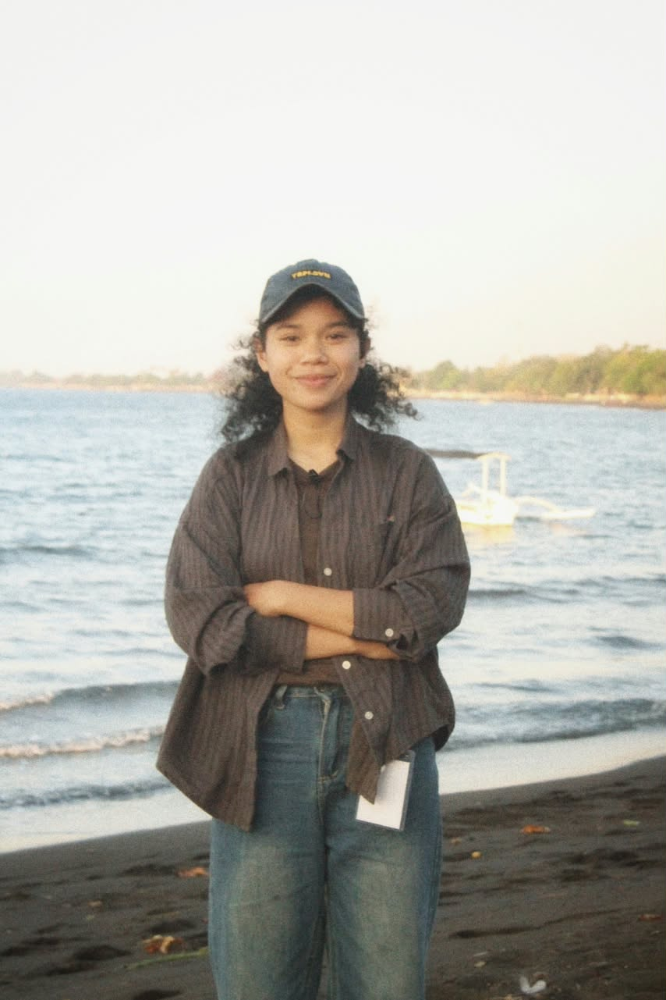

- Kampus
- Undiksha
- Konsentrasi
- Sistem Cerdas
- Semester
- 5
- Asal
- Flores, NTT
Tentang
Cerita singkat di balik portofolio ini.
Saya Yuta, mahasiswa Ilmu Komputer di Universitas Pendidikan Ganesha (Undiksha), Singaraja. Saya berasal dari wilayah Flores, Nusa Tenggara Timur, dan sedang merantau untuk kuliah.
Bidang yang paling saya nikmati adalah basis data: merancang tabel, menjaga relasi tetap bersih, dan menulis query yang menjawab pertanyaan nyata. Dari sana saya melebar ke pengembangan web, supaya data yang saya kelola bisa disajikan dengan tampilan yang rapi dan responsif.
Saat ini saya mengambil konsentrasi Sistem Cerdas. Semester depan saya akan menempuh Metodologi Penelitian dan Seminar Proposal, sehingga saya mulai menyiapkan arah topik tugas akhir.
Keahlian
- MySQL
- SQLite
- HTML5
- Tailwind CSS
- JavaScript
- PHP
- Laravel
- Python
Perjalanan akademik
Semester 1 sampai 4
Fondasi ilmu komputer
Pemrograman, struktur data, dan basis data sebagai pijakan utama.
Semester 5 (sekarang)
Konsentrasi Sistem Cerdas
Mendalami pengolahan data dan dasar-dasar pembelajaran mesin.
Semester 6
Metodologi Penelitian & Seminar Proposal
Menyusun proposal tugas akhir.